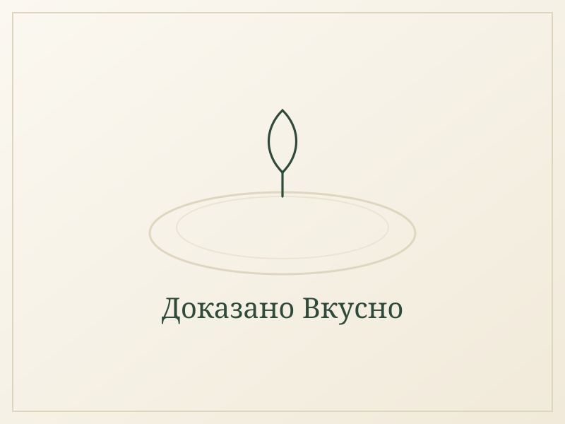

Курабийки
Домашни курабийки с кисело мляко, които стават меки и леко ронливи. Лимоновата кора и ванилията им дават аромат, а содата и бакпулверът ги правят пухкави. Брашното е приблизително — слагаш, докато тестото стане меко и спре да лепне.

Съставки
- около 3 ч.ч. брашно (около 390 г)
- 3 големи яйца
- 1 ч.ч. захар
- 1 ч.ч. кисело мляко
- 1 ч.л. сода бикарбонат
- 2 пакетчета бакпулвер
- ½ ч.ч. олио или разтопена мас
- 1 пакетче ванилия
- настъргана кора от 1 лимон
Начин на приготвяне
- Загрейте фурната на 180 градуса с вентилатор и постелете тавата с хартия за печене.
- В голяма купа разбийте яйцата със захарта с телена бъркалка, докато сместа поизсветлее и захарта се разтвори.
- В отделна чаша разбъркайте содата в киселото мляко и изчакайте да шупне. Добавете го към яйцата заедно с олиото (или мазта), ванилията и настърганата лимонова кора и разбъркайте.
- Смесете брашното с бакпулвера и го добавяйте на части, като разбърквате, а накрая замесете с ръце. Спрете, когато тестото стане меко и не лепне — може да ви трябва малко по-малко или малко повече от 3 ч.ч.
- Разточете тестото на около 1 см дебелина и изрежете курабийки с форми или чаша. Наредете ги в тавата на малко разстояние, защото бухват.
- Печете 12–15 минути, докато отдолу и по ръбовете станат златисти. Оставете ги да изстинат върху решетка, преди да ги приберете.
Предложение за сервиране
Очаквайте скоро.
Защо тази рецепта си заслужава
Защо си заслужават
Правят се с продукти, които почти винаги има вкъщи, без миксер и без охлаждане на тестото. От една доза стават около 20 курабийки — достатъчно за цялото семейство и за гости.
Кога е най-подходящо да се ядат
С чаша мляко или чай за закуска, следобед с кафе, а около празниците — като домашен подарък в кутия или буркан.
Какво дават на тялото
На курабийка (1/20): около 168 ккал, 3 г протеин, 6 г мазнини и 25 г въглехидрати.
Как да ги съхраняваш
В метална кутия или буркан на стайна температура издържат около седмица. Замразяват се добре до 2 месеца — размразяват се за половин час.
Още рецепти в същия дух
Фъч
Пухкав какаов блат с кисело мляко и сода, залят с топла глазура от какао и масло — домашен сладкиш в тава, без миксер.
Брауни от сладък картоф и банан
Сочно шоколадово брауни от сладък картоф, банан и овесено брашно, подсладено с мед — всичко се разбърква в една купа и се пече.
Шоколадов десерт от бисквити
Бисквити, два вида шоколад, масло и горещо мляко, пасирани в блендер — стяга се в хладилника до гъст, кремообразен десерт като пудинг.